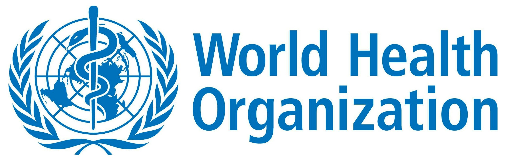

আপনি কিছু সাধারণ সতর্কতা অবলম্বন করে সংক্রামিত হওয়া বা COVID-19 ছড়িয়ে যাওয়ার সম্ভাবনা হ্রাস করতে পারেন:
1.) অ্যালকোহল ভিত্তিক হাত ঘষে আপনার হাত নিয়মিত এবং পুঙ্খানুপুঙ্খভাবে পরিষ্কার করুন বা সাবান এবং জলে ধুয়ে ফেলুন।
কেন?
সাবান ও জল দিয়ে আপনার হাত ধোয়া বা অ্যালকোহল ভিত্তিক হাত ঘষা ব্যবহার আপনার হাতের ভাইরাসকে মেরে ফেলে।

2.) নিজের এবং অন্যদের মধ্যে কমপক্ষে 1 মিটার (3 ফুট) দূরত্ব বজায় রাখুন।
কেন?
যখন কেউ কাশি, হাঁচি বা কথা বলে তখন তারা তাদের নাক বা মুখ থেকে ছোট তরল ফোঁটা স্প্রে করে যার মধ্যে ভাইরাস থাকতে পারে। যদি আপনি খুব কাছাকাছি থাকেন, তবে সেই ব্যক্তি যদি এই রোগে থাকে তবে আপনি COVID-19 ভাইরাস সহ ফোঁটাগুলিতে শ্বাস নিতে পারেন।

3.)জনাকীর্ণ জায়গায় যাওয়া থেকে বিরত থাকুন।
কেন?
লোকেরা যেখানে ভিড় জমায় সেখানে আপনার সিওআইডিডি -19 রয়েছে এমন ব্যক্তির সাথে ঘনিষ্ঠ যোগাযোগের সম্ভাবনা বেশি এবং শারীরিক দূরত্ব 1 মিটার (3 ফুট) বজায় রাখা আরও কঠিন।

4.) চোখ, নাক এবং মুখ স্পর্শ করা এড়িয়ে চলুন।
কেন?
হাতগুলি অনেকগুলি পৃষ্ঠকে স্পর্শ করে এবং ভাইরাস তুলতে পারে। দূষিত হয়ে গেলে, হাতগুলি আপনার চোখ, নাক বা মুখে ভাইরাস স্থানান্তর করতে পারে। সেখান থেকে ভাইরাসটি আপনার দেহে প্রবেশ করে আপনাকে সংক্রামিত করতে পারে।

5.) নিশ্চিত করুন যে আপনি এবং আপনার চারপাশের লোকেরা শ্বাস প্রশ্বাসের ভাল স্বাস্থ্য অনুসরণ করেন। এর অর্থ আপনি যখন কাশি বা হাঁচি পান তখন আপনার বাঁকানো কনুই বা টিস্যু দিয়ে আপনার মুখ এবং নাকটি coveringেকে রাখুন। তারপরে অবিলম্বে ব্যবহৃত টিস্যুগুলি নিষ্পত্তি করে হাত ধুয়ে ফেলুন।
কেন?
ফোঁটা ভাইরাস ছড়ায়। ভাল শ্বাস প্রশ্বাসের হাইজিন অনুসরণ করে আপনি আপনার চারপাশের লোকজনকে ঠান্ডা, ফ্লু এবং সিওভিড -১৯ এর মতো ভাইরাস থেকে রক্ষা করেন।

6.) কাঁচা, মাথা ব্যথা, হালকা জ্বর ইত্যাদির মতো ছোটখাটো লক্ষণ থাকলেও ঘরে বসে থাকুন এবং স্ব-বিচ্ছিন্ন হন until কেউ আপনার সরবরাহ আনতে হবে। আপনার যদি বাড়ি ছেড়ে চলে যেতে হয় তবে অন্যকে সংক্রামন এড়ানোর জন্য একটি মুখোশ পরুন।
কেন?
অন্যের সাথে যোগাযোগ এড়িয়ে চলা তাদের সম্ভাব্য COVID-19 এবং অন্যান্য ভাইরাস থেকে রক্ষা করবে।

7.) আপনার যদি জ্বর, কাশি এবং শ্বাস নিতে সমস্যা হয় তবে চিকিত্সার পরামর্শ নিন, তবে সম্ভব হলে আগেই টেলিফোনে কল করুন এবং আপনার স্থানীয় স্বাস্থ্য কর্তৃপক্ষের নির্দেশাবলী অনুসরণ করুন।
কেন?
জাতীয় এবং স্থানীয় কর্তৃপক্ষের কাছে আপনার অঞ্চলের পরিস্থিতি সম্পর্কে সর্বাধিক আধুনিক তথ্য থাকবে। আগে থেকে কল করা আপনার স্বাস্থ্যসেবা সরবরাহকারীকে দ্রুত আপনাকে সঠিক স্বাস্থ্য সুবিধার দিকে পরিচালিত করার অনুমতি দেবে। এটি আপনাকে রক্ষা করবে এবং ভাইরাস এবং অন্যান্য সংক্রমণের বিস্তার রোধ করতে সহায়তা করবে।
8.) বিশ্বস্ত উত্স থেকে সর্বশেষ তথ্য যেমন ডাব্লুএইচও বা আপনার স্থানীয় এবং জাতীয় স্বাস্থ্য কর্তৃপক্ষের কাছ থেকে সর্বশেষ তথ্য অবিরত রাখুন।
কেন?
স্থানীয় এবং জাতীয় কর্তৃপক্ষকে আপনার অঞ্চলের লোকেরা কীভাবে তাদের রক্ষা করার জন্য করা উচিত সে বিষয়ে পরামর্শ দেওয়ার জন্য সর্বোত্তম স্থান দেওয়া হয়েছে।
